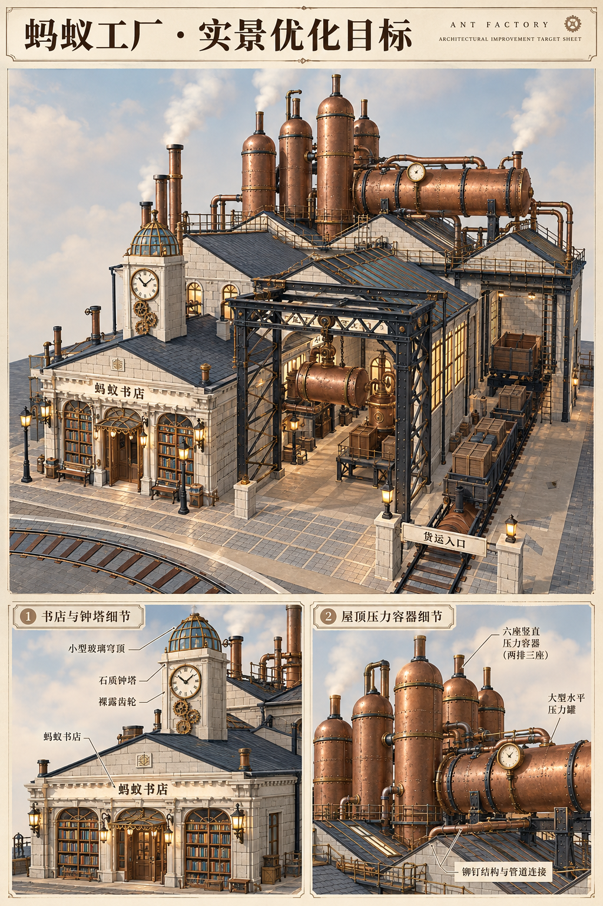

Jakub · 三工厂独立构造目标
依据当前工厂源码与已存场景参考，由Jakub智能体指导，imagegen生成。每厂单独展示实景同机位整体模型、书店与机械构造细节；不含机器人形象。属于模型优化概念，非现有游戏截图或精确施工图。
蚂蚁工厂 · v2用户已认可
v2按实景近景重画：小书店与玻璃顶细钟塔、前右起重门架、左后高位立罐、中右屋顶卧式大罐及右侧窄货轨。

各视图仅表示设计方向，设备坐标、朝向及通道尺寸须在三维实施时核对。实景参考为此前保存画面，本轮没有新GPU截图。
Jakub指导与复审 · 书店镇总览